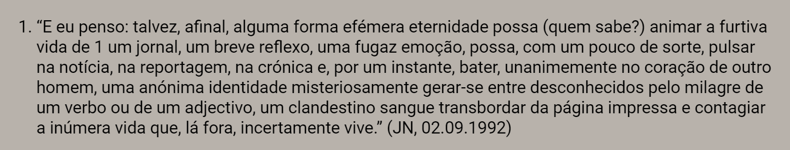
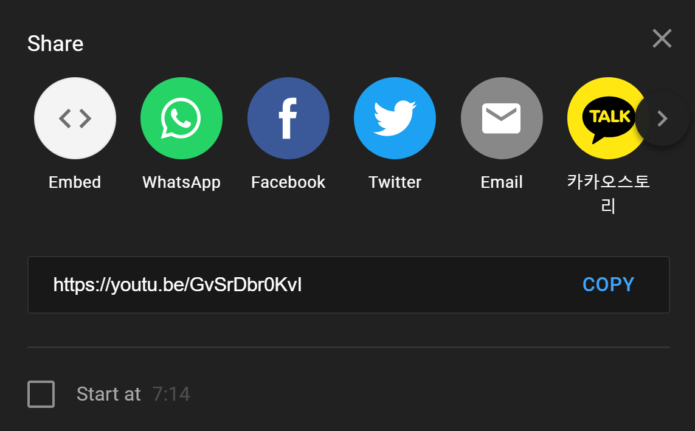
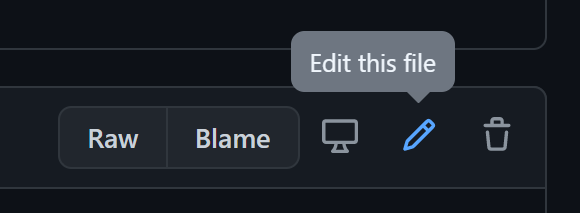
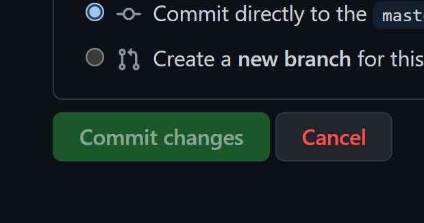

Em código começa-se a contar do 0.
→ Obrigatório ⚠️
→ Opcional
Usage: Caso um título seja muito comprido para aparecer por inteiro na homepage será substituído por este.
→ Opcional
→ Obrigatório ⚠️
→ Obrigatório ⚠️
Usage: Expecificar o tipo de categoria (ex: Artigo, Comentário, Comunicado, Exposição, etc... Definições ao vosso critério.)
→ Obrigatório ⚠️
Usage: Utilizar formato "MONTH DAY, YEAR HH:MM:SS" e escrever sempre em Inglês (ex: April 5, 2021 00:00:00). Os projetos só estaram disponíveis no website a partir da data estipulada. Durante as duas primeiras semanas do lançamentos dos projetos, eses teram uma tag de "NEW!". Caso não seja alterada a data fica com a data que já está preenchida.
→ Recomendado
Usage: Keywords extra que o motor de busca utiliza para filtrar as pesquisas. As Tags nunca estam visíveis no site, apenas no código.
→ Recomendado
Usage: Imagem que aparece quando é feito hover num projeto. Caso nao haja imagem é substituida por uma imagem genérica (em baixo). Escrever o nome + extenção do ficheiro a utilizar (ex: imagem.jpg). Ficheiros suportados: jpg, png, svg, gif.
→ Recomendado
Usage: Começar sempre o texto com P ou H2. Atenção, o texto por default está justificado ao centro. Ter também atenção ao copiar textos de outros sítios pois estes podem já vir estilizados. (Tip: Se colarem texto na barra de URL do browser o texto perde toda a formatação.)
Caso queiram usar aspas usar estas (“ ”) (’) ou estas (« »). Para mais caractéres especiais aqui.
(caso seja necessário podem aumentar a área de escrita)
→ Opcional
Usage: Notas de rodapé no fim dos Textos. Estas já vêm numeradas (ex: 1. Sapo é uma designação genérica de anfíbios da ordem Anura predominantemente terrestres, com pele rugosa, e glândulas parotoides semelhantes a verrugas.)
Resultado:
→ Opcional
Usage: Atribuição de créditos a colaboradores. Aparece no fim dos dos projetos.
→ Opcional
Usage: Imagens que aparecem nos projetos. Caso haja mais 1 imagem é criada uma galeria. Escrever o nome + extenção do ficheiro a utilizar (ex: imagem.jpg). Ficheiros suportados: jpg, png, svg, gif. Caso haja mais que uma imagem nunca deixar um input vazio!
→ Opcional
Usage: Conteúdos de outros sites que queiram ser embebidos (ex: videos youtube/vimeo, músicas soundloud). Normalmente nas opçoes de partilha existe uma opção de "Embeb". Colar o código resultante.
1. Preencher com as informações desejadas.
2. Fazer Download do ficheiro.
3. Copiar todo o conteúdo do ficheiro txt.
4. Go to HERE. Ou manualmente à página do repositório "lamaga_site" na pasta Scripts ao ficheiro Data.js.
5. Abrir o ficheiro "data.js" e clicar em editar.
6. Colar o texto do ficheiro txt em cima da linha que diz: "// ░▒▓█ PASTE ABOVE HERE █▓▒░"
(Repetir as últimas duas ações por cada coisa a inserir no site)
7. Assim que terminado clicar em "Commit Changes"
8. Está feito. Ter atenção que o site demora alguns minutos a atualizar, recomendo fazerem hard refresh da página para irem verificando. (Windows: Ctrl + F5 / Mac: Cmnd + F5). Caso não apareça ou dê erro confirmar se todas as indicações foram seguidas (especialmente Usage notes das Datas).
9. Caso haja imagens, colocar todas na pasta Content, bem optimizadas para Web, comprimir e evitar exceder os 100kb e 1080px por imagem e 1080px do maior comprimento. Comprimir imagens é crucial para que o site carrege smoothly. (Para comprimir imagens recomendo utilizar https://squoosh.app/ ou https://tinypng.com/)
10. Caso queiram apagar um projeto basta ir ao ficheiro, selecionar e apagar, mas ter atenção ao conteúdo a ser apagado.
11. Os projetos aparecem no site pela ordem que aparecem no ficheiro ↥ (Em baixo 1º, em cima último). Caso queiram trocar a ordem basta trocar no ficheiro, mas ter atenção.
12. Em caso de dúvida contactar @oi.design.di / skatelovver@gmail.com